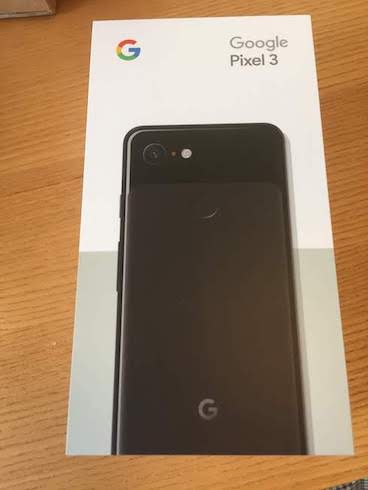

Pixel 3に乗り換えた
3年ほど使っていたiPhone 6からPixel 3に乗り換えた。
ずっと小型のiPhoneが出るのを待っていたけどまったく出なかったので、iPhone 3GS以来ずっと使っていたiOSからAndroidに移行した。

また、これを機に7年ほど契約していたauからLINE mobileに移った。公式には動作確認済み端末には載っていなかったけど、ちゃんと動作した。
LINE mobileを選んだ理由としては、回線速度に対してネットの評判がそこまで悪くなかったのと、料金体系がシンプルで分かりやすくて好印象だったのがある。